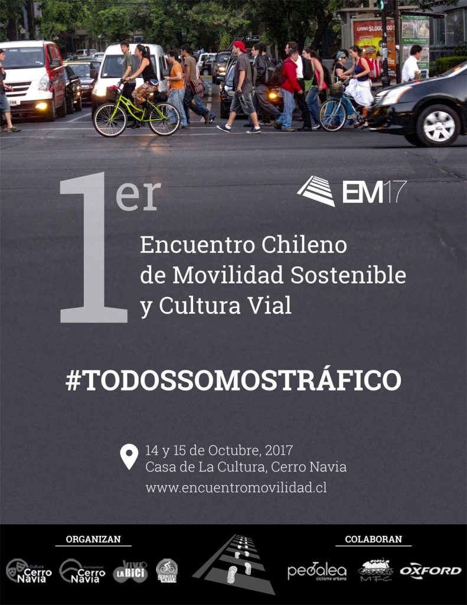

El encuentro se desarrolló los días sábado 14 y domingo 15 de octubre de 2017 en el auditorio de la Casa de la Cultura Violeta Parra, en la comuna de Cerro Navia, Santiago.
La idea de desarrollar este encuentro nace de la necesidad de la comunidad ciclista de resolver situaciones recurrentes de movilidad en nuestras ciudades. Creemos que instancias como esta, que incluyen a todos los actores del tránsito, ayudan a promover una cultura vial de respeto y protección hacia los más vulnerables, y al mismo tiempo potencian los modos sustentables de traslado.
Como se ha constatado en las vías, las dificultades de movilidad radican mayoritariamente en los mismos factores que se ven a lo largo del país: ausencia de conciencia vial, uso indiscriminado del automóvil particular, inequidad en la inversión en vialidad e infraestructura deficiente. Estos factores se conjugan en las calles provocando los mal llamados accidentes de tránsito, congestión y un uso inequitativo del espacio público. Atendiendo a la necesidad de fomentar la movilidad sostenible y la cultura vial, la Municipalidad de Cerro Navia —en coordinación con su Dirección de Cultura— quiso ser parte protagónica de esta iniciativa, acogiendo el encuentro en la Casa de la Cultura Violeta Parra y el Parque Mapocho, y colaborando en la organización junto a la Asociación Vive la Bici y la agrupación Pedalea X la Calle. Se sumó además el apoyo de Oxford, Revista Pedalea y el Movimiento Furiosos Ciclistas.
Fue un evento libre y gratuito, bicigestionado y organizado por voluntariado de agrupaciones ciudadanas pro bicicleta.
Los paneles
Durante los dos días tuvimos la oportunidad de debatir y conversar sobre diversos temas, con paneles como “Género y Movilidad”, “Visión Cero”, “Políticas y Movilidad”, “Cultura Vial” y “Desafíos para una Movilidad Sustentable”, además del “Pedaleando por Chile”, con representantes de organizaciones de todo el país que también participaron en el conversatorio “Rumbo a la Bici Red Chilena”; y el ejercicio de sensibilización hacia ciclistas con conductores de transporte público.